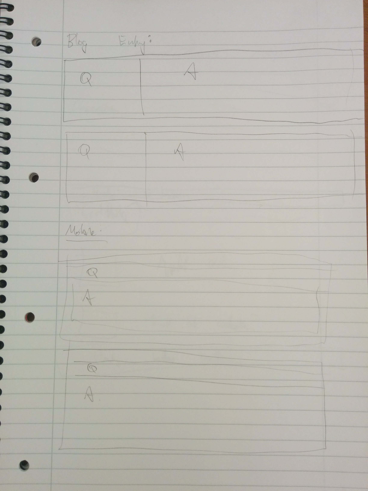

Responsive website designs are ones which adjust the layout or content of the website depending on factors such as the device they are being viewed on, or the size of the screen.
Responsive design is important because increasing number of web users are accessing websites via tablets or phones, and site layouts intended for PCs don't necessarily work on smaller screens.
Mobile first design is the idea that websites should be designed with phone layouts as the default or starting point. It's important because it means phones are taken into account in design, and designing this way means that phones (which have less processing power than PCs), don't have to process code intended for PCs and then discard it.
Frameworks are pre-designed CSS pages and associated HTML codes that allow web devs to create websites using the predesigned properties. They have a lot of advantages, as a web dev is unlikely to need to re-invent the wheel when coding most sites, and the framework both saves time and provides a design methodology that can be applied when creating the website. However, the original design of the website may not be consistent with the framework methodology, which will require the dev to either heavily modify or not use the framework at all.
I haven't seen this term used before in our materials, but I assume it is the same as a grid/boxified design. It's a way of thinking about HTML elements (which are almost always rectangular) and how to orient them such that your website corresponds to the original design. My very crude wireframes for this page look like this:
Applying the skeleton framework when our previous tute was on Bootstrap seemed a little strange. The sizing of objects in CSS and positioning relative to others always seems very non-intuitive to me, and can cause rule conflicts, which are also pretty tough to figure out.
But that was something I have to expect. The most demoralizing thing was going back through my existing blog entries to bring them into line with the new framework, and realizing that some of my old code, which I had hoped to still use, was replicating the functionality of the framework. I suppose it is nice that my ideas were on the right track, but it's also saddening to remove them and replace them with someone else's work.